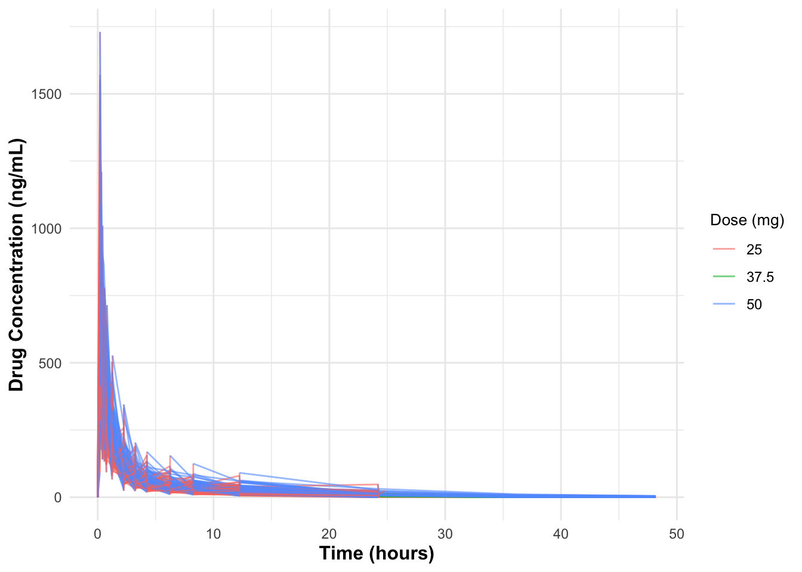
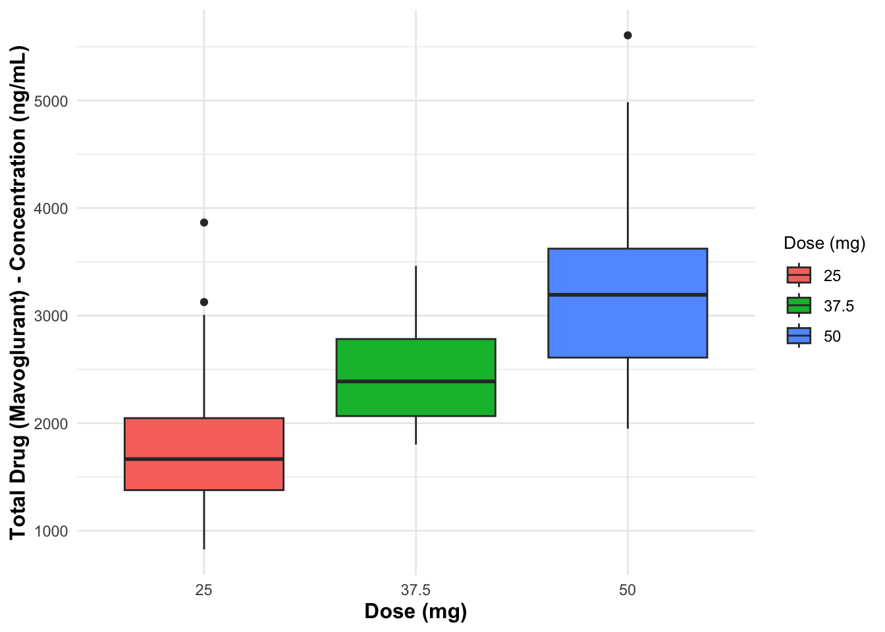
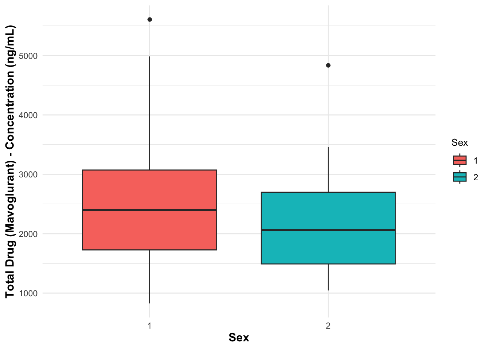
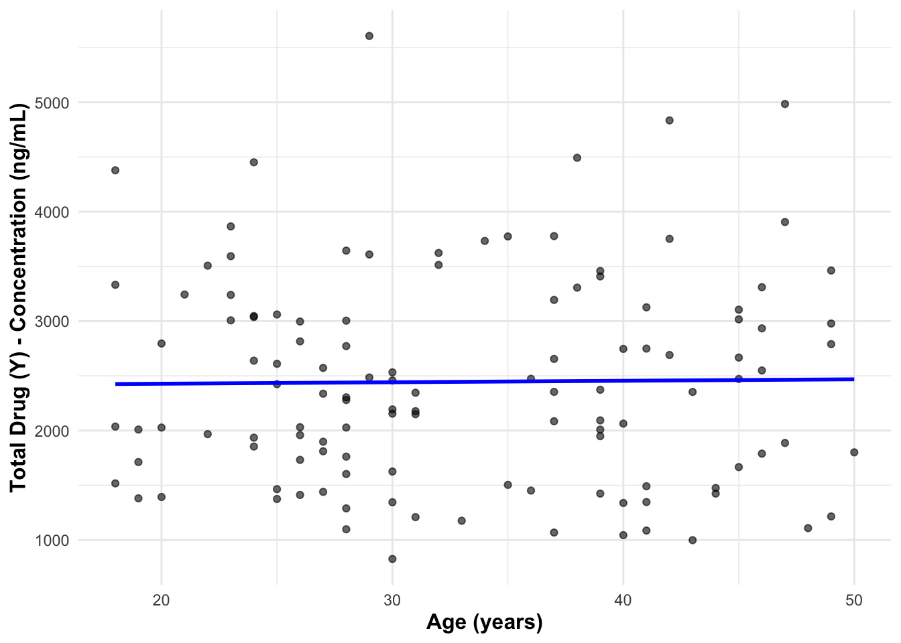
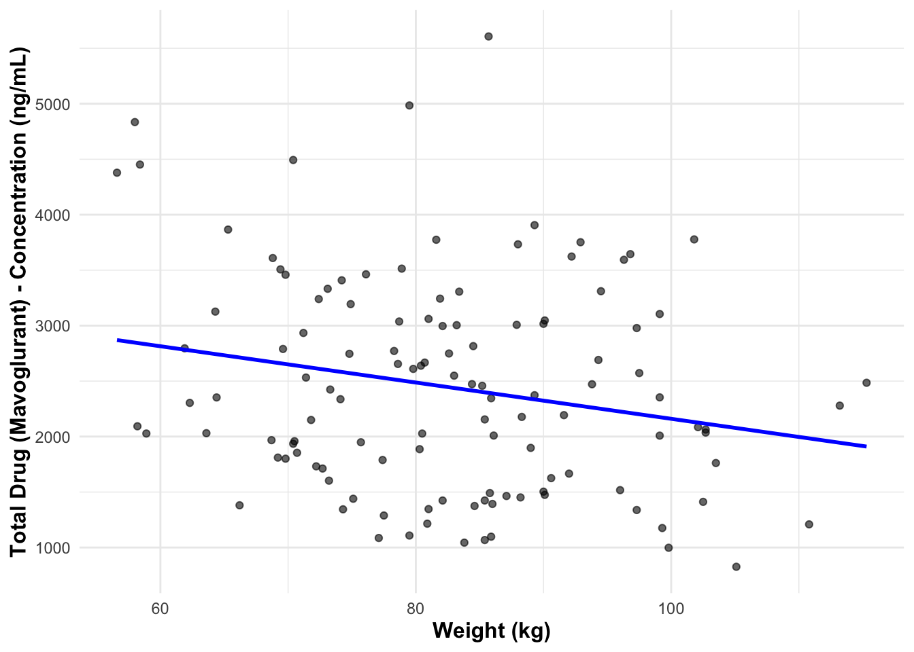
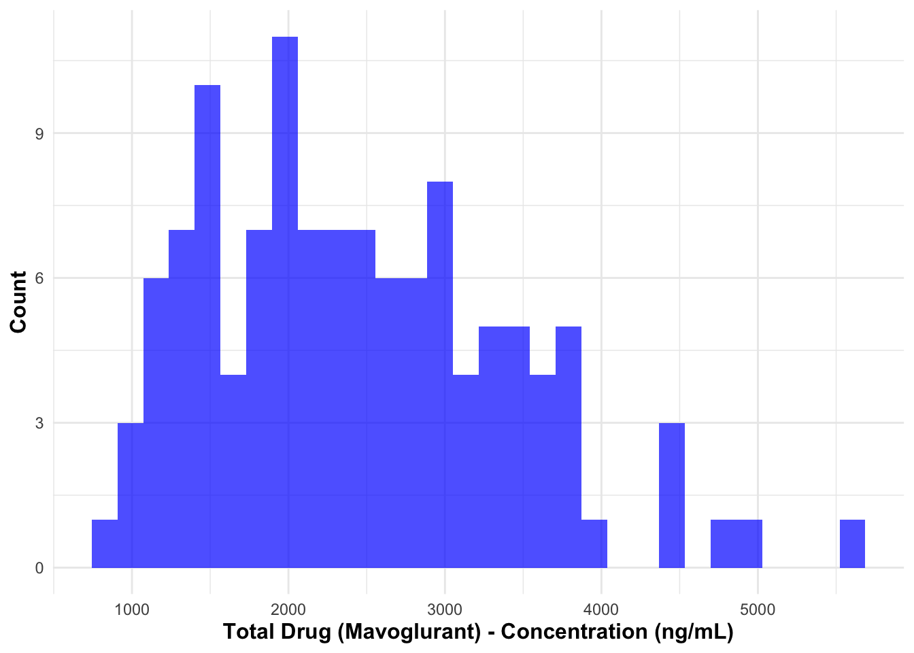
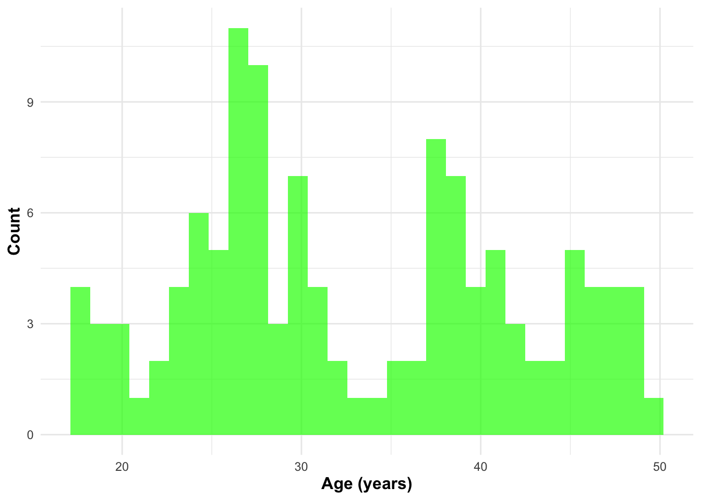
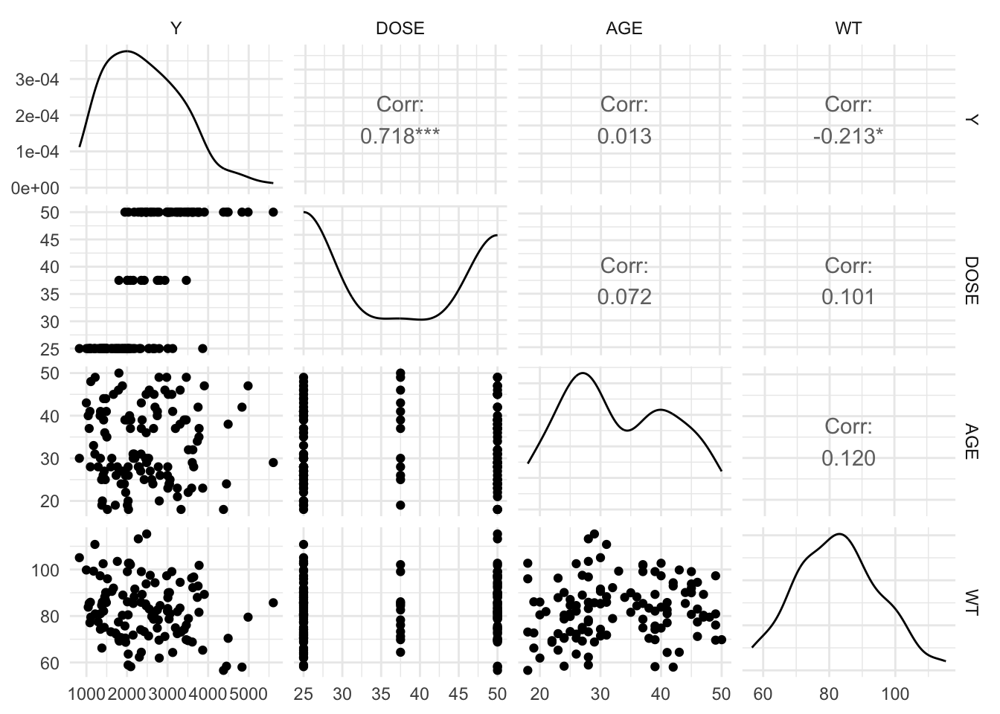

# Install and load necessary packages
library(tidyverse)── Attaching core tidyverse packages ──────────────────────── tidyverse 2.0.0 ──
✔ dplyr 1.1.4 ✔ readr 2.1.5
✔ forcats 1.0.0 ✔ stringr 1.5.1
✔ ggplot2 3.5.1 ✔ tibble 3.2.1
✔ lubridate 1.9.4 ✔ tidyr 1.3.1
✔ purrr 1.0.4
── Conflicts ────────────────────────────────────────── tidyverse_conflicts() ──
✖ dplyr::filter() masks stats::filter()
✖ dplyr::lag() masks stats::lag()
ℹ Use the conflicted package (<http://conflicted.r-lib.org/>) to force all conflicts to become errors# Or manually specify a mirror
options(repos = c(CRAN = "https://cloud.r-project.org/"))
# Now try installing the package
install.packages("GGally")
The downloaded binary packages are in
/var/folders/29/tsfhn2w952x9r8f27_hpzq900000gn/T//Rtmpa3l1Vh/downloaded_packageslibrary(GGally)Registered S3 method overwritten by 'GGally':
method from
+.gg ggplot2library(skimr)
# Load the Mavoglurant_A2121_nmpk.csv data
df <- read.csv("/Users/hopegrismercomputer/Desktop/MADA-course/hopegrismer-MADA-portfolio/fitting-exercise/Mavoglurant_A2121_nmpk.csv")
# Initial exploration
glimpse(df)Rows: 2,678
Columns: 17
$ ID <int> 793, 793, 793, 793, 793, 793, 793, 793, 793, 793, 793, 793, 793, …
$ CMT <int> 1, 2, 2, 2, 2, 2, 2, 2, 2, 2, 2, 2, 2, 2, 2, 2, 1, 2, 2, 2, 2, 2,…
$ EVID <int> 1, 0, 0, 0, 0, 0, 0, 0, 0, 0, 0, 0, 0, 0, 0, 0, 1, 0, 0, 0, 0, 0,…
$ EVI2 <int> 1, 0, 0, 0, 0, 0, 0, 0, 0, 0, 0, 0, 0, 0, 0, 0, 1, 0, 0, 0, 0, 0,…
$ MDV <int> 1, 0, 0, 0, 0, 0, 0, 0, 0, 0, 0, 0, 0, 0, 0, 0, 1, 0, 0, 0, 0, 0,…
$ DV <dbl> 0.00, 491.00, 605.00, 556.00, 310.00, 237.00, 147.00, 101.00, 72.…
$ LNDV <dbl> 0.000, 6.196, 6.405, 6.321, 5.737, 5.468, 4.990, 4.615, 4.282, 3.…
$ AMT <dbl> 25, 0, 0, 0, 0, 0, 0, 0, 0, 0, 0, 0, 0, 0, 0, 0, 25, 0, 0, 0, 0, …
$ TIME <dbl> 0.000, 0.200, 0.250, 0.367, 0.533, 0.700, 1.200, 2.200, 3.200, 4.…
$ DOSE <dbl> 25, 25, 25, 25, 25, 25, 25, 25, 25, 25, 25, 25, 25, 25, 25, 25, 2…
$ OCC <int> 1, 1, 1, 1, 1, 1, 1, 1, 1, 1, 1, 1, 1, 1, 1, 1, 1, 1, 1, 1, 1, 1,…
$ RATE <int> 75, 0, 0, 0, 0, 0, 0, 0, 0, 0, 0, 0, 0, 0, 0, 0, 150, 0, 0, 0, 0,…
$ AGE <int> 42, 42, 42, 42, 42, 42, 42, 42, 42, 42, 42, 42, 42, 42, 42, 42, 2…
$ SEX <int> 1, 1, 1, 1, 1, 1, 1, 1, 1, 1, 1, 1, 1, 1, 1, 1, 1, 1, 1, 1, 1, 1,…
$ RACE <int> 2, 2, 2, 2, 2, 2, 2, 2, 2, 2, 2, 2, 2, 2, 2, 2, 2, 2, 2, 2, 2, 2,…
$ WT <dbl> 94.3, 94.3, 94.3, 94.3, 94.3, 94.3, 94.3, 94.3, 94.3, 94.3, 94.3,…
$ HT <dbl> 1.769997, 1.769997, 1.769997, 1.769997, 1.769997, 1.769997, 1.769…skim(df)| Name | df |
| Number of rows | 2678 |
| Number of columns | 17 |
| _______________________ | |
| Column type frequency: | |
| numeric | 17 |
| ________________________ | |
| Group variables | None |
Variable type: numeric
| skim_variable | n_missing | complete_rate | mean | sd | p0 | p25 | p50 | p75 | p100 | hist |
|---|---|---|---|---|---|---|---|---|---|---|
| ID | 0 | 1 | 858.81 | 34.08 | 793.00 | 832.00 | 860.00 | 888.00 | 915.00 | ▅▆▇▇▇ |
| CMT | 0 | 1 | 1.93 | 0.26 | 1.00 | 2.00 | 2.00 | 2.00 | 2.00 | ▁▁▁▁▇ |
| EVID | 0 | 1 | 0.07 | 0.26 | 0.00 | 0.00 | 0.00 | 0.00 | 1.00 | ▇▁▁▁▁ |
| EVI2 | 0 | 1 | 0.16 | 0.70 | 0.00 | 0.00 | 0.00 | 0.00 | 4.00 | ▇▁▁▁▁ |
| MDV | 0 | 1 | 0.09 | 0.29 | 0.00 | 0.00 | 0.00 | 0.00 | 1.00 | ▇▁▁▁▁ |
| DV | 0 | 1 | 179.93 | 226.28 | 0.00 | 23.52 | 74.20 | 283.00 | 1730.00 | ▇▂▁▁▁ |
| LNDV | 0 | 1 | 4.08 | 1.88 | 0.00 | 3.16 | 4.31 | 5.64 | 7.46 | ▃▃▇▇▅ |
| AMT | 0 | 1 | 2.76 | 10.32 | 0.00 | 0.00 | 0.00 | 0.00 | 50.00 | ▇▁▁▁▁ |
| TIME | 0 | 1 | 5.85 | 8.91 | 0.00 | 0.58 | 2.25 | 6.36 | 48.22 | ▇▁▁▁▁ |
| DOSE | 0 | 1 | 37.37 | 12.05 | 25.00 | 25.00 | 37.50 | 50.00 | 50.00 | ▇▁▁▁▇ |
| OCC | 0 | 1 | 1.38 | 0.49 | 1.00 | 1.00 | 1.00 | 2.00 | 2.00 | ▇▁▁▁▅ |
| RATE | 0 | 1 | 16.55 | 61.88 | 0.00 | 0.00 | 0.00 | 0.00 | 300.00 | ▇▁▁▁▁ |
| AGE | 0 | 1 | 32.90 | 8.87 | 18.00 | 26.00 | 31.00 | 40.00 | 50.00 | ▆▇▅▅▅ |
| SEX | 0 | 1 | 1.13 | 0.33 | 1.00 | 1.00 | 1.00 | 1.00 | 2.00 | ▇▁▁▁▁ |
| RACE | 0 | 1 | 7.41 | 21.97 | 1.00 | 1.00 | 1.00 | 2.00 | 88.00 | ▇▁▁▁▁ |
| WT | 0 | 1 | 83.16 | 12.48 | 56.60 | 73.30 | 82.60 | 90.60 | 115.30 | ▂▇▇▅▁ |
| HT | 0 | 1 | 1.76 | 0.08 | 1.52 | 1.71 | 1.78 | 1.82 | 1.93 | ▁▃▆▇▃ |
# Plot the outcome variable DV (drug concentration) as a function of time, stratified by DOSE and using ID as a grouping factor
p <- df %>%
ggplot(aes(x = TIME , y = DV, group = ID, color = as.factor(DOSE))) + # DOSE is used for stratification by dose
geom_line(alpha = 0.6) +
labs(
x = "Time (hours)",
y = "Drug Concentration (ng/mL)",
color = "Dose (mg)"
) +
theme_minimal() +
theme(
axis.title.x = element_text(size = 12, face = "bold"),
axis.title.y = element_text(size = 12, face = "bold"),
legend.title = element_text(size = 10),
legend.text = element_text(size = 9)
)
print(p)
# Keep only observations where OCC == 1 (remove OCC == 2)
df_filtered <- df %>%
filter(OCC == 1)
# Compute total drug amount for each individual (sum of DV values), excluding TIME == 0
drug_sums <- df_filtered %>%
filter(TIME != 0) %>%
group_by(ID) %>%
summarize(Y = sum(DV, na.rm = TRUE))
# Create a data frame with only observations where TIME == 0 (dosing information)
dose_info <- df_filtered %>%
filter(TIME == 0)
# Join the two data frames: one with drug sums and the other with dosing info
df_final <- left_join(dose_info, drug_sums, by = "ID")
# Select only relevant variables and convert RACE and SEX to factors
df_cleaned <- df_final %>%
select(Y, DOSE, AGE, SEX, RACE, WT, HT) %>%
mutate(
SEX = as.factor(SEX),
RACE = as.factor(RACE)
)
# Final check of the cleaned data
glimpse(df_cleaned)Rows: 120
Columns: 7
$ Y <dbl> 2690.52, 2638.81, 2149.61, 1788.89, 3126.37, 2336.89, 3007.20, 27…
$ DOSE <dbl> 25.0, 25.0, 25.0, 25.0, 25.0, 25.0, 25.0, 25.0, 25.0, 25.0, 25.0,…
$ AGE <int> 42, 24, 31, 46, 41, 27, 23, 20, 23, 28, 46, 22, 43, 50, 19, 26, 3…
$ SEX <fct> 1, 1, 1, 2, 2, 1, 1, 1, 1, 1, 1, 1, 2, 2, 1, 1, 1, 1, 1, 1, 1, 1,…
$ RACE <fct> 2, 2, 1, 1, 2, 2, 1, 88, 2, 1, 1, 1, 1, 1, 2, 2, 1, 1, 1, 1, 1, 1…
$ WT <dbl> 94.3, 80.4, 71.8, 77.4, 64.3, 74.1, 87.9, 61.9, 65.3, 103.5, 83.0…
$ HT <dbl> 1.769997, 1.759850, 1.809847, 1.649993, 1.560052, 1.829862, 1.850…skim(df_cleaned)| Name | df_cleaned |
| Number of rows | 120 |
| Number of columns | 7 |
| _______________________ | |
| Column type frequency: | |
| factor | 2 |
| numeric | 5 |
| ________________________ | |
| Group variables | None |
Variable type: factor
| skim_variable | n_missing | complete_rate | ordered | n_unique | top_counts |
|---|---|---|---|---|---|
| SEX | 0 | 1 | FALSE | 2 | 1: 104, 2: 16 |
| RACE | 0 | 1 | FALSE | 4 | 1: 74, 2: 36, 88: 8, 7: 2 |
Variable type: numeric
| skim_variable | n_missing | complete_rate | mean | sd | p0 | p25 | p50 | p75 | p100 | hist |
|---|---|---|---|---|---|---|---|---|---|---|
| Y | 0 | 1 | 2445.41 | 961.64 | 826.43 | 1700.53 | 2349.14 | 3050.22 | 5606.58 | ▆▇▆▂▁ |
| DOSE | 0 | 1 | 36.46 | 11.86 | 25.00 | 25.00 | 37.50 | 50.00 | 50.00 | ▇▁▂▁▆ |
| AGE | 0 | 1 | 33.00 | 8.98 | 18.00 | 26.00 | 31.00 | 40.25 | 50.00 | ▅▇▃▅▅ |
| WT | 0 | 1 | 82.55 | 12.52 | 56.60 | 73.18 | 82.10 | 90.10 | 115.30 | ▂▇▇▅▁ |
| HT | 0 | 1 | 1.76 | 0.09 | 1.52 | 1.70 | 1.77 | 1.81 | 1.93 | ▁▃▆▇▃ |
# Summary table by DOSE
summary_table <- df_cleaned %>%
group_by(DOSE) %>%
summarize(
Mean_Y = mean(Y, na.rm = TRUE),
Median_Y = median(Y, na.rm = TRUE),
SD_Y = sd(Y, na.rm = TRUE),
Count = n()
)
print(summary_table)# A tibble: 3 × 5
DOSE Mean_Y Median_Y SD_Y Count
<dbl> <dbl> <dbl> <dbl> <int>
1 25 1783. 1666. 601. 59
2 37.5 2464. 2388. 488. 12
3 50 3239. 3194. 787. 49# Boxplots of Y vs predictors with improved labels
ggplot(df_cleaned, aes(x = as.factor(DOSE), y = Y, fill = as.factor(DOSE))) +
geom_boxplot() +
labs(
x = "Dose (mg)",
y = "Total Drug (Mavoglurant) - Concentration (ng/mL)",
fill = "Dose (mg)"
) +
theme_minimal() +
theme(
axis.title.x = element_text(size = 12, face = "bold"),
axis.title.y = element_text(size = 12, face = "bold"),
legend.title = element_text(size = 10),
legend.text = element_text(size = 9)
)
ggplot(df_cleaned, aes(x = as.factor(SEX), y = Y, fill = as.factor(SEX))) +
geom_boxplot() +
labs(
x = "Sex",
y = "Total Drug (Mavoglurant) - Concentration (ng/mL)",
fill = "Sex"
) +
theme_minimal() +
theme(
axis.title.x = element_text(size = 12, face = "bold"),
axis.title.y = element_text(size = 12, face = "bold"),
legend.title = element_text(size = 10),
legend.text = element_text(size = 9)
)
# Scatterplots with regression lines
scatter_1 <- ggplot(df_cleaned, aes(x = AGE, y = Y)) +
geom_point(alpha = 0.6) +
geom_smooth(method = "lm", se = FALSE, color = "blue") +
labs(
x = "Age (years)",
y = "Total Drug (Y) - Concentration (ng/mL)"
) +
theme_minimal() +
theme(
axis.title.x = element_text(size = 12, face = "bold"),
axis.title.y = element_text(size = 12, face = "bold")
)
print(scatter_1)`geom_smooth()` using formula = 'y ~ x'
scatter_2 <- ggplot(df_cleaned, aes(x = WT, y = Y)) +
geom_point(alpha = 0.6) +
geom_smooth(method = "lm", se = FALSE, color = "blue") +
labs(
x = "Weight (kg)",
y = "Total Drug (Mavoglurant) - Concentration (ng/mL)"
) +
theme_minimal() +
theme(
axis.title.x = element_text(size = 12, face = "bold"),
axis.title.y = element_text(size = 12, face = "bold")
)
print(scatter_2)`geom_smooth()` using formula = 'y ~ x'
# Distribution plots
ggplot(df_cleaned, aes(x = Y)) +
geom_histogram(bins = 30, fill = "blue", alpha = 0.7) +
labs(
x = "Total Drug (Mavoglurant) - Concentration (ng/mL)",
y = "Count"
) +
theme_minimal() +
theme(
axis.title.x = element_text(size = 12, face = "bold"),
axis.title.y = element_text(size = 12, face = "bold")
)
ggplot(df_cleaned, aes(x = AGE)) +
geom_histogram(bins = 30, fill = "green", alpha = 0.7) +
labs(
x = "Age (years)",
y = "Count"
) +
theme_minimal() +
theme(
axis.title.x = element_text(size = 12, face = "bold"),
axis.title.y = element_text(size = 12, face = "bold")
)
# Correlation plot with adjusted axis labels
cor_plot <- ggpairs(df_cleaned %>% select(Y, DOSE, AGE, WT)) +
theme_minimal() +
theme(
axis.title.x = element_text(size = 12, face = "bold"),
axis.title.y = element_text(size = 12, face = "bold")
)
print(cor_plot)